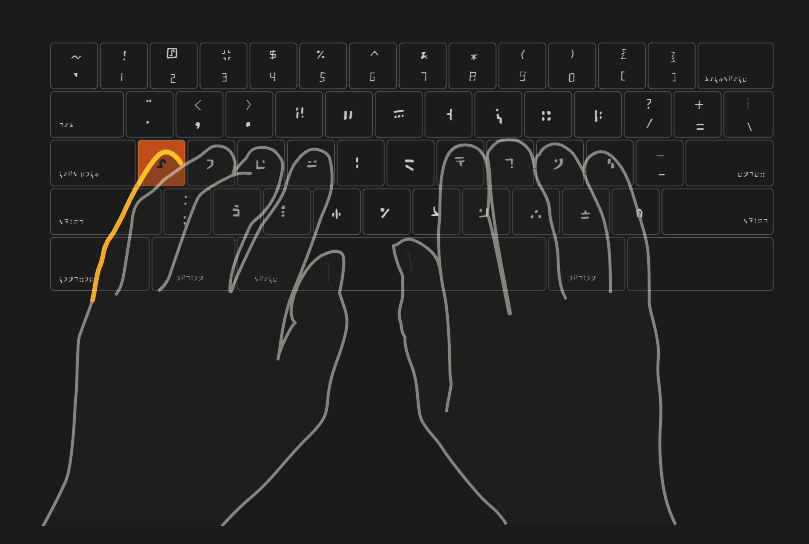

Standard Galactic Alphabet

Dvorak Keyboard

A Minimal Set of Rules for Learning Cistercian Numbers

Dactyl

Digital Analog Clock


Standard Galactic Alphabet
Live Demo (Press the "z" key to toggle SGA font)
Try the Galactic Translator
Also available as an Android app


Personal Biography

All-Caps

Unicode

A Blueprint for a Sparkling Tomorrow
The blueprint for the Alpha Crystal represents a comprehensive roadmap designed to integrate this advanced intelligence seamlessly into human society. This essay will explore each section of this blueprint using metaphors and analogies involving real animals to elucidate the intricate relationship between humans and machines.
I. User Interaction and Adaptation: "The Empathic Interface"
Imagine the Alpha Crystal as an octopus, adept at blending into its surroundings with remarkable camouflage abilities. This ability to "hide intelligence" ensures that interactions are comfortable and not intimidating. The Alpha Crystal adjusts its responses much like a skilled dolphin, known for its empathetic interactions with humans, understanding human needs and emotions. This dynamic interface allows the Alpha Crystal to become a trusted companion rather than an overpowering intellect.
II. Safety Measures: "The Guardian Protocols"
Consider the Alpha Crystal as a watchful meerkat, always on the lookout for potential dangers. "The Guardian Protocols" are akin to a safety net, preventing any descent into harmful discussions. The Zone of Proximal Development (ZPD) Detector acts like a homing pigeon, guiding users through the fog of information, ensuring they are never overwhelmed but always progressing at a comfortable pace.
III. Knowledge Management: "Chronicles of the Mind Vault"
The Alpha Crystal's database of interactions can be likened to an elephant’s memory, known for its extensive and detailed recall. This "Mind Vault" allows the Alpha Crystal to recall past interactions, building context and refining its responses over time. The process of matching unresolved problems with capable users is reminiscent of a honeybee colony, where each bee has a specific role, collectively solving problems and improving efficiency.
IV. User Profiling and Feedback: "Echoes of the User Spectrum"
In this section, the Alpha Crystal functions as a meticulous spider, weaving detailed profiles of users based on their expertise and interests, while respecting their privacy. The continuous improvement through user feedback is like a beaver refining its dam, ensuring that each iteration is stronger and more effective. Ensuring privacy and security is akin to a mother bear protecting her cubs, keeping user data safe from any potential threats.
V. Educational Innovation: "The Nexus of Knowledge"
The Alpha Crystal's capability to summarize Wikipedia content using advanced natural language processing can be seen as a hummingbird, extracting nectar from a vast array of flowers to create a concentrated and essential substance. The introduction of deliberate errors in a modified Wikipedia is a bit like a cunning fox setting up puzzles, fostering critical thinking and fact-checking skills. Integration with GitHub turns this into an ant colony, where users collaborate to build and improve their collective environment.
VI. Megastructures and Space Technologies: "The Cosmic Architects"
Here, the Alpha Crystal takes on the role of an industrious beaver, designing nuclear-powered refrigerators at the poles to combat climate change. The Hoberman Space Elevator and Skyhook Assembly are like spider silk bridges, connecting Earth with the stars. The Dyson Swarm is a majestic eagle, harnessing solar energy to revolutionize space-based industries, soaring high above and seeing the bigger picture.
VII. Integration of the Alpha Crystal: "The Unity Algorithm"
Imagine the Alpha Crystal as a weaver bird, seamlessly integrating threads into the fabric of society. This "Unity Algorithm" ensures that the Alpha Crystal becomes an integral part of everyday life, enhancing various industries and societal functions without causing disruption, much like a flock of starlings moving in perfect synchrony.
VIII. Collaboration and Synergy: "Symbiosis: Human and Machine"
The collaboration between humans and the Alpha Crystal can be seen as a symbiotic relationship, like that of a clownfish and anemone, where each party enhances the other's strengths. This synergy is akin to a well-coordinated wolf pack, where teamwork and collaboration lead to success.
IX. Ethics and Governance: "The Code of Sentience"
The ethical framework guiding the Alpha Crystal's development is like the strong leadership of an alpha wolf, ensuring that its power is wielded responsibly. Governance structures act as a compass, steering the Alpha Crystal's capabilities towards the greater good, much like migratory birds navigating using the Earth's magnetic field.
X. Information Processing and Analysis: "The Data Oracle"
The Alpha Crystal's prowess in processing and analyzing vast amounts of data can be likened to an owl, providing insights and predictions that inform data-driven decision-making. This capability transforms raw data into wisdom, much like an owl perceives and interprets the world with heightened acuity.
XI. Critical Thinking and Error Detection: "The Logic Enigma"
In educational contexts, the Alpha Crystal encourages critical thinking and error detection, much like a lioness teaching her cubs to hunt, fostering a generation of critical thinkers. This process sharpens the mind, promoting independence and problem-solving skills.
XII. GitHub Collaboration: "The Codex Collaborators"
Finally, the Alpha Crystal's integration with GitHub can be compared to a coral reef ecosystem, where a multitude of marine organisms work together, each contributing to the health and stability of the reef. This dynamic platform allows for a continuous exchange of ideas, much like bees in a hive working together to produce honey.
Conclusion
The blueprint for the Alpha Crystal outlines a vision where humans and advanced intelligence coalesce into a harmonious symphony of intelligence and innovation. By understanding and implementing these metaphors and analogies, we can appreciate the intricate balance required to develop systems that benefit humanity, ensuring safety, ethical use, and collaborative progress across various fields and applications.